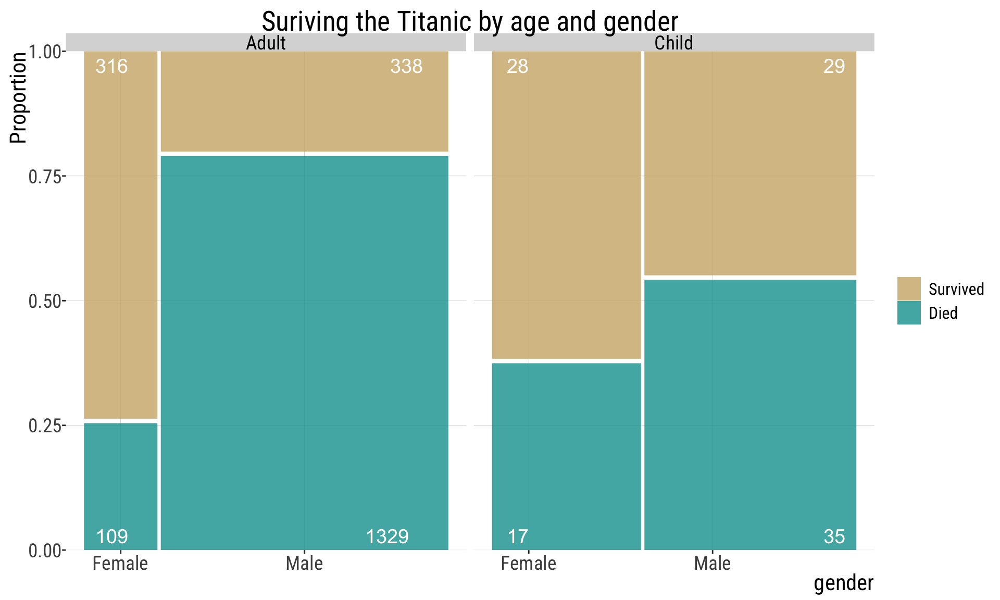

1.3.Types of variables and soft intro to study design
Acknowledgments: see last slide
September 2, 2026
Quick recap
Last lecture we discussed:
- The two types of errors associated with sampling: sampling error and sampling bias
- Properties of a good sample
Learning goals
- Detect the differences between [observational]{.underline} and experimental studies.
- Identify whether a variable is numeric or categorical (and subtypes).
- Understand why experimental studies reveal causation, while observational studies cannot.
- Recognize that confounding factors limit our ability to interpret observed patterns.
Variables and “Data”
A variable is a characteristic measured on individuals drawn from a population under study.
Data are measurements of one or more variables made on a collection of individuals. (i.e., your sample).
Dataset is a collection of data taken from a single source or intended for a single purpose.
:::
The tidy way to organize data in datasets
Each column records one variable. Each row corresponds to one observation.
| ind01 |
|
|
|
| ind02 |
|
|
|
| ind03 |
|
|
|
| ind04 |
|
|
|
- Important: never, ever, modify the original (raw) dataset. Instead, focus on reproducibility.
Example: the iris dataset in R
| 5.1 |
3.5 |
1.4 |
0.2 |
setosa |
| 4.9 |
3.0 |
1.4 |
0.2 |
setosa |
| 4.7 |
3.2 |
1.3 |
0.2 |
setosa |
| 4.6 |
3.1 |
1.5 |
0.2 |
setosa |
| 5.0 |
3.6 |
1.4 |
0.2 |
setosa |
| 5.4 |
3.9 |
1.7 |
0.4 |
setosa |
- you can learn more about this dataset by looking it up in R:
Types of variables/data
Numeric (also known as quantitative)
-
Discrete: can be counted
-
Continuous: can be measured
Categorical (also known as class or nominal variables)
-
Ordinal: can be ranked
-
Nominal: cannot be ranked
Numeric Data/Variables
Discrete: can only take some values within acceptable interval
Examples:
- Number of limbs
- Number of offspring
- Number of petals
- Number of teeth
- Natural numbers: \(\{0,1,2,3,4,5,6,7,...,\infty\}\)
Numeric Data/Variables
Continuous: Can take any value within acceptable interval
Examples:
- Arm length (cm, inches)
- Height (cm, inches)
- Weight (kg, lbs)
- Age and longevity (in years, months, etc.)
- Tail length (cm, inches)
- Dose (e.g., in micrograms/gram)
- Skin color (measured using a reflectometer, measure in wavelengths)
Categorical variables
Examples:
- Genotype (e.g., AA, AG, GG)
- Drug treatment (e.g. aspirin vs.ibuprofen)
- Province of origin
- Survival status (i.e., live or die)
- Skin/fur/coat/feather color (e.g., black, yellow, red, etc.)
Relationships between variables
Case Study: surviving the Titanic (1/2)
Case Study: surviving the Titanic (2/2)
Consider the fate of the approximatley 2,200 passengers of the titanic, including children and adults of both sexes.

This is a mosaic plot. We will learn about it in our next topic. Code based on snippets from Y. Brandvain.
Acknowledgments
Yaniv Brandvain, Freeman & Company, and Michael Whitlock for some materials used in these slides.
![[Cueball reading off a smart phone to someone off-screen.] Cueball: According to this polling data, after Kirk and Picard, the most popular Star Trek character are Data. Off-screen voice: Augh! [Caption below the frame:] Annoy grammar pedants on all sides by making \"data\" singular except when referring to the android.](https://imgs.xkcd.com/comics/data_2x.png)